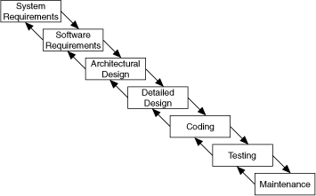
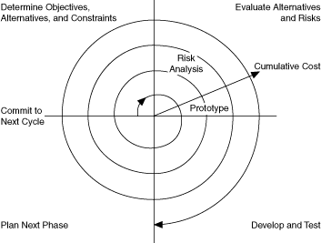

Software development projects are complex. To deal with these complexities, many developers adhere to a core set of development principles. These principles define the field of software engineering. A major component of this field is the life cycle model. The life cycle model describes steps to follow when developing software�from the initial concept stage to the release, maintenance, and subsequent upgrading of the software.
Many different life cycle models currently exist. Each has advantages and disadvantages in terms of time-to-release, quality, and risk management. This topic describes some of the most common models used in software engineering. Many hybrids of these models exist, so you can customize these models to fit the requirements of a project.
Although this discussion is theoretical, in practice consider all the steps these models encompass. Consider how you decide what requirements and specifications the project must meet and how you deal with changes to them. Also consider when you need to meet these requirements and what happens if you do not meet a deadline.
The life cycle model is a foundation for the entire development process. Good decisions can improve the quality of the software you develop and decrease the time it takes to develop it.
The code and fix model probably is the most frequently used development methodology in software engineering. It starts with little or no initial planning. You immediately start developing, fixing problems as they occur, until the project is complete.
Code and fix is a tempting choice when you are faced with a tight development schedule because you begin developing code right away and see immediate results.
Unfortunately, if you find major architectural problems late in the process, you usually have to rewrite large parts of the application. Alternative development models can help you catch these problems in the early concept stages, when making changes is easier and less expensive.
The code and fix model is appropriate only for small projects that are not intended to serve as the basis for future development.
The waterfall model is the classic model of software engineering. This model is one of the oldest models and is widely used in government projects and in many major companies. Because the model emphasizes planning in the early stages, it catches design flaws before they develop. Also, because the model is document and planning intensive, it works well for projects in which quality control is a major concern.
The pure waterfall model consists of several non-overlapping stages, as shown in the following illustration. The model begins with establishing system requirements and software requirements and continues with architectural design, detailed design, coding, testing, and maintenance. The waterfall model serves as a baseline for many other life cycle models.

The following list details the steps for using the waterfall model:
In each stage, you create documents that explain the objectives and describe the requirements for that phase. At the end of each stage, you hold a review to determine whether the project can proceed to the next stage. You also can incorporate prototyping into any stage from the architectural design and after.
Many people believe you cannot apply this model to all situations. For example, with the pure waterfall model, you must state the requirements before you begin the design, and you must state the complete design before you begin coding. There is no overlap between stages. In real-world development, however, you can discover issues during the design or coding stages that point out errors or gaps in the requirements.
The waterfall model does not prohibit returning to an earlier phase, for example, from the design phase to the requirements phase. However, this involves costly rework. Each completed phase requires formal review and extensive documentation development. Thus, oversights made in the requirements phase are expensive to correct later.
Because the actual development comes late in the process, you do not see results for a long time. This delay can be disconcerting to management and to customers. Many people also think the amount of documentation is excessive and inflexible.
Although the waterfall model has its weaknesses, it is instructive because it emphasizes important stages of project development. Even if you do not apply this model, consider each of these stages and its relationship to your own project.
Many engineers recommend modified versions of the waterfall model. These modifications tend to focus on allowing some of the stages to overlap, thus reducing the documentation requirements and the cost of returning to earlier stages to revise them. Another common modification is to incorporate prototyping into the requirements phases.
Overlapping stages, such as the requirements stage and the design stage, make it possible to integrate feedback from the design phase into the requirements. However, overlapping stages can make it difficult to know when you are finished with a given stage. Consequently, progress is more difficult to track. Without distinct stages, problems can cause you to defer important decisions until later in the process when they are more expensive to correct.
One of the main problems with the waterfall model is that the requirements often are not completely understood in the early development stages. When you reach the design or coding stages, you begin to see how everything works together, and you can discover that you need to adjust the requirements.
Prototyping is an effective tool for demonstrating how a design meets a set of requirements. You can build a prototype, adjust the requirements, and revise the prototype several times until you have a clear picture of the overall objectives. In addition to clarifying the requirements, a prototype also defines many areas of the design simultaneously.
The pure waterfall model allows for prototyping in the later architectural design stage and subsequent stages but not in the early requirements stages.
However, prototyping has its drawbacks. Because it appears that you have a working system, customers might expect a complete system sooner than is possible. In most cases, a prototype is built on compromises that allow it to come together quickly but prevent the prototype from being an effective basis for future development. You need to decide early if you want to use the prototype as a basis for future development. All parties need to agree with this decision before development begins.
Be careful that prototyping does not become a disguise for a code and fix development cycle. Before you begin prototyping, gather clear requirements and create a design plan. Limit the amount of time you spend prototyping before you begin. Time limits help to avoid overdoing the prototyping phase. As you incorporate changes, update the requirements and the current design. After you finish prototyping, consider returning to one of the other development models. For example, consider prototyping as part of the requirements or design phases of the waterfall model.
You can prototype a system in LabVIEW in a number of ways. In systems with I/O requirements that are difficult to satisfy, you can develop a prototype to test the control and acquisition loops and rates. In I/O prototypes, random data can simulate data acquired in the real system.
Systems with many user interface requirements are perfect for prototyping. Determining the method you use to display data or prompt the user for settings is difficult on paper. Instead, consider designing VI front panels with the controls and indicators you need. Leave the block diagram empty and figure out how the controls work and how various actions require other front panels. For more extensive prototypes, tie the front panels together. However, do not get carried away with this process.
If you are bidding on a project for a client, using front panel prototypes is an extremely effective way to discuss with the client how you can satisfy his or her requirements. Because you can add and remove controls quickly, especially if the block diagrams are empty, you help customers clarify requirements.
The spiral model is a popular alternative to the waterfall model. It emphasizes risk management so you find major problems earlier in the development cycle. In the waterfall model, you have to complete the design before you begin coding. With the spiral model, you break up the project into a set of risks that you need to deal with. You then begin a series of iterations in which you analyze the most important risk, evaluate options for resolving the risk, deal with the risk, assess the results, and plan for the next iteration. The following illustration shows the spiral life cycle model.

Risks are any issues that are not clearly defined or have the potential to affect the project adversely. For each risk, consider the following two things:
You can use a scale of 1 to 10 for each of these items, where 1 represents the lowest probability or loss and 10 represents the highest. Risk exposure is the product of these two rankings.
Use something such as the following table to keep track of the top risk items of the project.
| ID | Risk | Probability | Loss | Risk Exposure | Risk Management Approach |
|---|---|---|---|---|---|
| 1 | Acquisition rates too high | 5 | 9 | 45 | Develop prototype to demonstrate feasibility |
| 2 | File format might not be efficient | 5 | 3 | 15 | Develop benchmarks to show speed of data manipulation |
| 3 | Uncertain user interface | 2 | 5 | 10 | Involve customer; develop prototype |
In general, deal with the risks that have the highest risk exposure first. In this example, the first spiral deals with the potential of the data acquisition rates being too high. If after the first spiral, you demonstrate that the rates are high, you can change to a different hardware configuration to meet the acquisition requirements. Each iteration can identify new risks. In this example, using more powerful hardware can introduce higher costs as a new risk.
For example, assume you are designing a data acquisition system with a plug-in data acquisition card. In this case, the risk is whether the system can acquire, analyze, and display data quickly enough. Some of the constraints in this case are system cost and requirements for a specific sampling rate and precision.
After determining the options and constraints, you evaluate the risks. In this example, create a prototype or benchmark to test acquisition rates. After you see the results, you can evaluate whether to continue with the approach or choose a different option. You do this by reassessing the risks based on the new knowledge you gained from building the prototype.
In the final phase, you evaluate the results with the customer. Based on customer input, you can reassess the situation, decide on the next highest risk, and start the cycle over. This process continues until the software is finished or you decide the risks are too great and terminate development. It is possible that none of the options are viable because the options are too expensive, time-consuming, or do not meet the requirements.
The advantage of the spiral model over the waterfall model is that you can evaluate which risks to handle with each cycle. Because you can evaluate risks with prototypes much earlier than in the waterfall model, you can deal with major obstacles and select alternatives in the earlier stages, which is less expensive. With a standard waterfall model, assumptions about the risky components can spread throughout the design, and when you discover the problems, the rework involved can be very expensive.
Life cycle models are described as distinct choices from which you must select. In practice, however, you can apply more than one model to a single project. You can start a project with a spiral model to help refine the requirements and specifications over several iterations using prototyping. Once you have reduced the risk of a poorly stated set of requirements, you can apply a waterfall model to the design, coding, testing, and maintenance stages.
Other life cycle models exist. Several third-party resources contain information about other development methodologies.